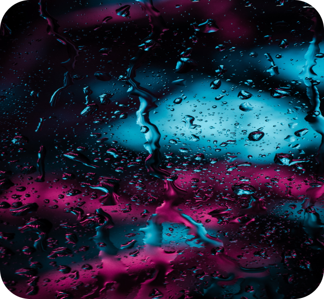
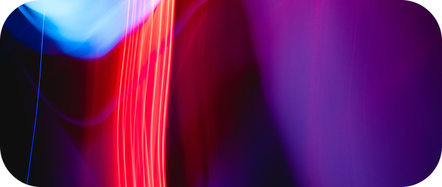

Вам нужна М8 Чтобы убрать с лобового стекла смартфон или не держать его в руке во время вождения!
Усовершенствуйте свое авто новой современной мультимедийной системой Gazer M8. Устройство работает на ОС Android 10 и имеет антибликовый сенсорный HD-дисплей.
Идеальное сочетание технологий, высокой производительности и удобства использования
Вам нужна М8 Чтобы подключить любимое приложение с картами
и музыкой.
Вам нужна М8 Чтобы отвечать на сообщение голосом.
Антибликовое покрытие
Большой дисплей гарантирует отличное изображение в высоком качестве. А благодаря специальному антибликовому покрытию можно быть уверенным, что в любую погоду и под любым углом обзора картинка останется качественной, четкой и без бликов.
Сенсорное
управление
У M8 высокая чувствительность сенсорного экрана — система легко реагирует на касания и обеспечивает максимальную скорость отклика на команды.
Закаленный экран 2.5D — прочный и устойчивый к царапинам, со скругленными краями по сторонам.
QLED-матрица
9-дюймовый HD-дисплей с QLED-матрицей. Высокий уровень яркости подсветки и насыщенная цветопередача под любым углом обзора. Модель получила фирменную калибровку цветов Gazer.
Split View
Благодаря этому режиму можно одновременно запускать несколько приложений, например, YouTube и навигацию. Экран при этом разделится на две части.
Вы также можете вывести камеру заднего вида на главный экран в любое время.
На рабочем столе есть окно для настройки этой опции.
Мультиэкран
Вы сможете быстро запускать нужные приложения, для этого достаточно вывести иконки на главный экран.
Вам нужна М8 Чтобы была
штатная навигация.
Память
6 GB ОЗУ позволяют одновременно запускать множество приложений и быстро прорисовывают интерфейс. А благодаря 128 GB встроенной памяти вы сможете хранить на своем устройстве любую музыку и программы.
Максимальная
скорость
работы
Магнитола работает на базе сверхмощного и быстрого 8-ядерного процессора с частотой 2.0GHz и техпроцессом 12nm. Он обеспечивает вдвое сниженное тепловыделение при максимальных нагрузках. При длительном использовании у вас не возникнет проблем с перегревом или подтормаживанием (троттлингом).
4G LTE модем
В устройство встроен скоростной модем 4G LTE, поддерживающий одновременную работу с двумя SIM-картами. Вы можете выбрать, с какой SIM-карты использовать Интернет.
Кроме того, вы можете заменить одну из SIM-карт в в любое время. Выносной слот выводится в бардачок.
Подключение
камер заднего
вида
Gazer М8 поддерживает цифровые камеры заднего вида стандарта AHD с разрешением Full HD.
DSP-процессор
и изменение
звуковой сцены
Встроенный аудиопроцессор DSP раскладывает звук по каналам, меняет эквалайзер, управляет задержками и фильтрами частот.
Вы можете установить задержку звука по каждому каналу, чтобы сформировать правильную аудиосцену, чтобы она воспроизводилась только для вас.
Активное охлаждение
Технология активного охлаждения устройства — идеальное решение для Middle East регионов. Стабильная работа без перегрева при любой погоде и температуре благодаря встроенному вентилятору и радиатору.
Звук Hi-Fi уровня
Магнитола оснащена современным усилителем класса Hi-Fi. Он обеспечивает высокое качество звука, превосходящее оригинальные автомобильные аудиосистемы. Усилитель отвечает за вывод звука на динамики, если в авто нет штатного или установленного усилителя.
Вы получите мощный и чистый звук в широком диапазоне.
32-полосный эквалайзер
Регулируйте интенсивность воспроизведения звука в 32 частотных диапазонах.
Также есть отдельный аудиоканал для управления сабвуфером.

Цифровой
кроссовер
и регулировка баса
Благодаря функции цифрового кроссовера можно установить фильтр по частотам — выставить, какие частоты не воспроизводить на определенных каналах, чтобы звук оставался чистым.
Если нужно компенсировать разницу в акустике, есть раздельная регулировка баса на передних и задних динамиках.
Получайте больше
счастья в вашей
машине
Аудиовыходы 5.1
Gazer М8 имеет цифровой оптический и коаксиальный аудиовыходы 5.1 для подключения ко внешним современным цифровым усилителям.
Улучшенный прием FM радио
В модели установлен радиоприемник последнего поколения с реализацией 10-летнего опыта разработки автомагнитол. Дополнительные фильтры сигнала, стабильный прием без помех при максимальном отдалении от радиовышек и ретрансляторов.
Полная интеграция с авто
Gazer разрабатывает каждую модель под конкретное авто или модельный ряд. Будьте уверены, что мультимедийная система отлично дополнит и усовершенствует ваш автомобиль.

Голосовое управление
Мы убрали все ненужные кнопки в Bluetooth-пульте, оставив самые необходимые.
Благодаря полному голосовому управлению вам не нужно прикасаться к экрану и отрывать взгляд от дороги. Очень удобно запускать приложения, переключать треки, управлять настройками.
Подключайте телефоны
Беспроводной CarPlay
Проводной Android Auto
Через Bluetooth для потоковой передачи аудио и совершения звонков
При этом качество передачи звука остается максимально высоким.
Вам нужна М8 Чтобы вождение было комфортным и безопасным.
CarPlay
Для подключения iPhone к магнитоле для интеграции Siri и других функций: прокладывайте маршруты, отправляйте и получайте сообщения (с голосовым воспроизведением), слушайте музыку. Весь функционал iPhone будет отображаться на экране устройства с фирменным интерфейсом.
Внешний микрофон
Благодаря встроенному микрофону вы можете комфортно общаться по громкой связи с любой точки салона. При необходимости подключите внешний микрофон, он идет в комплекте.
Спящий режим
Магнитола переходит в спящий режим с момента выключения двигателя. После трех дней бездействия полностью отключается для сохранения заряда аккумулятора автомобиля. Выходит из режима сна за несколько секунд.
Выход в Интернет через 4G LTE модем
Доступ в Интернет открывает широкие возможности — просмотр фото- и видеофайлов, загрузка любых приложений, управление навигацией, общение в социальных сетях или мессенджерах.